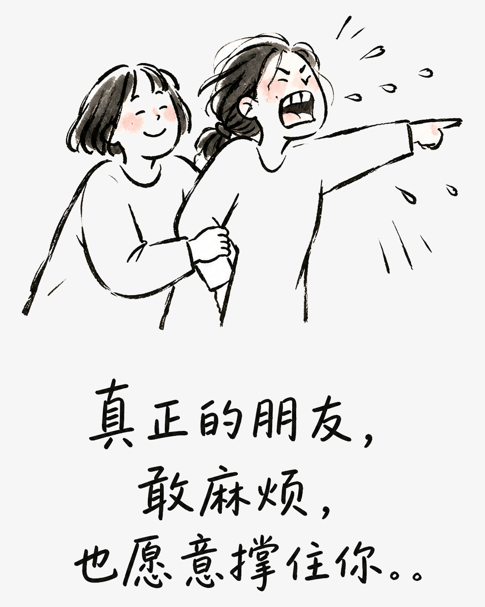
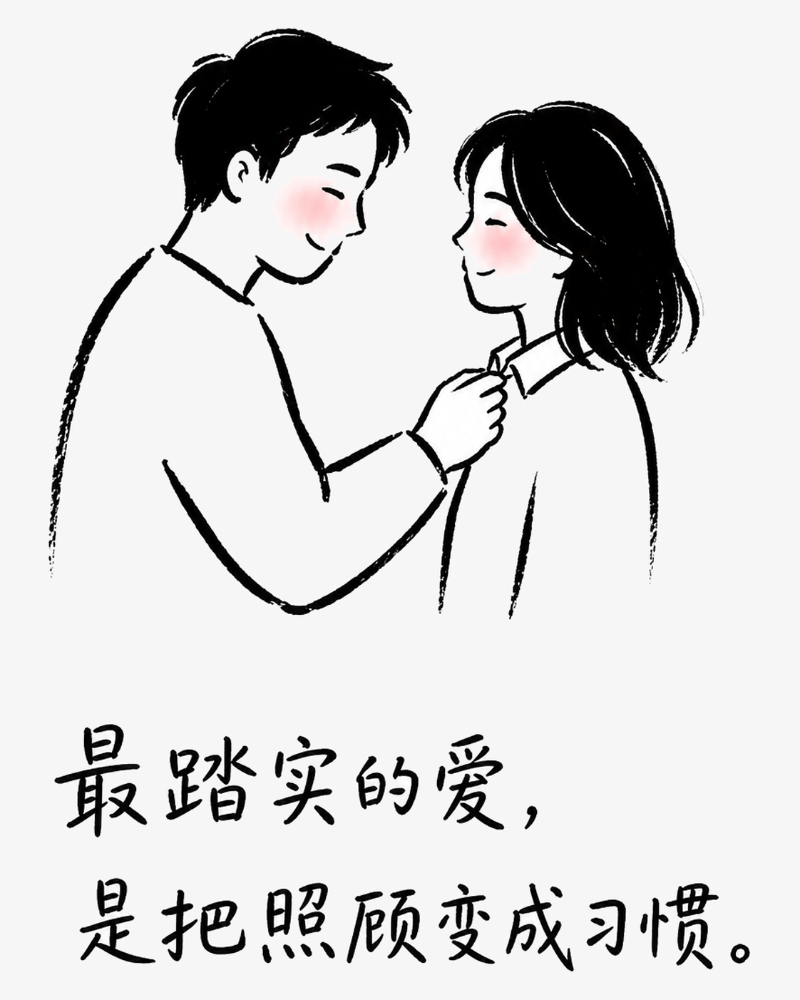
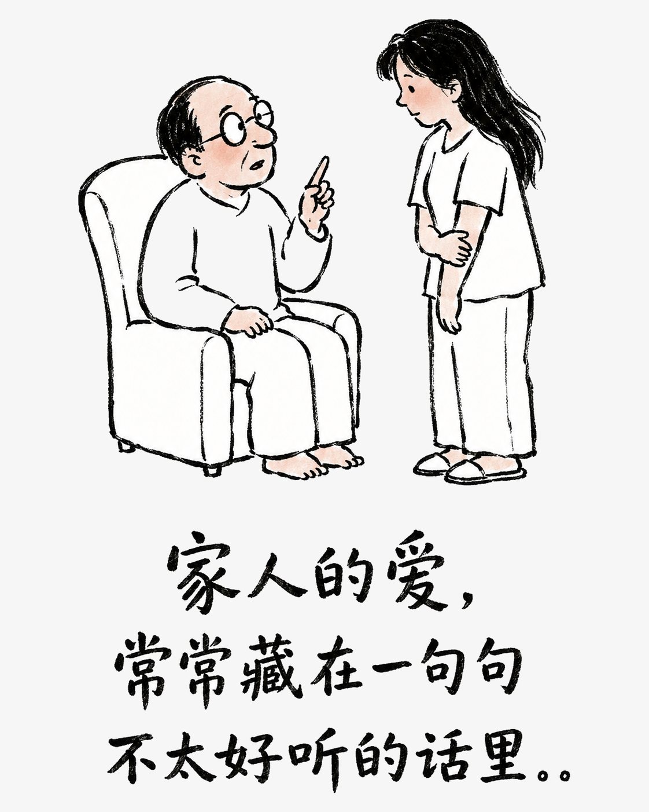

真正亲近的人，爱都藏在不客气里
有些关系不靠漂亮话维系，而是靠一次次“麻烦你了”和“我来吧”，把彼此稳稳放在生活里。
人与人走得长久，靠的从来不只是热闹，而是你需要时，对方愿意伸手；对方开口时，你也不觉得负担。那些看似随意的照顾，其实都在说：我把你当自己人。
朋友：嘴上嫌弃，行动却很快
你临时出门，请朋友帮忙照看宠物，她嘴上抱怨，还是准时上门；你搬家喊累，她一边说下次不来了，一边默默把最重的箱子扛上楼。困难时借你一笔钱，平日里却和你把账目分明。朋友之间，算得清花销，却算不清那份情义。

伴侣：嘴上不饶人，细节不缺席
你深夜加班说饿了，他先回一句“怎么不早说”，转身却把热食送到楼下。你情绪低落，他不一定会讲动听的话，却会把水放到手边，把家务接过去。相处久了，感谢常常省略，照顾却没有缺席。

家人：一边念叨，一边惦记
家人最擅长把关心说成唠叨：嫌你吃得少，催你早点回家，提醒你别乱花钱。可当你真的遇到难处，他们总是先想办法。嘴上的计较，是生活习惯；心里的牵挂，才是永远不会撤走的底气。

好的关系，不是从不打扰，而是彼此都知道：这份麻烦，我接得住；这份偏爱，你值得拥有。